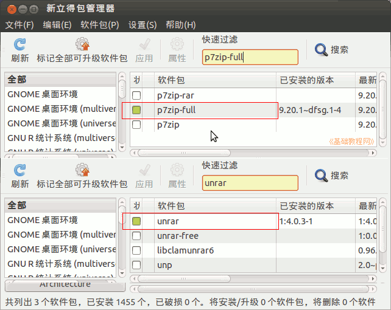

Ubuntu 入门操作指南
作者：TeliuTe 来源：基础教程网
二十九、归档管理器 返回目录 下一课归档管理器是一个压缩包管理器，用于打开压缩档；
1、归档管理器
1）点击主按钮，在搜索中输入file-roll ，打开归档管理器程序，或者依次点“主按钮、所有程序、过滤结果、附件、归档管理器”；
2）打开一个压缩包文件后，显示压缩包里的文件，可以双击打开，或者解压缩；
3）常用的压缩文件有 zip、tar、gz、bz2等，解压 7z格 式需要安装 p7zip-full，解压 rar 格式需要安装 unrar ；

4）如果只是压缩和解压缩文件，可以直接在文件管理器中，瞄准文件点右键，选择“压缩..”；
5）然后在出来的对话框右边，选择一种压缩格式，再点“创建”即可；
6）要快速解压一个压缩包，瞄准点右键选择“解压到此处”；
本节学习了归档管理器的基础知识，如果你成功地完成了练习，请继续学习下一课内容；
本教程由86团学校TeliuTe制作|著作权所有
基础教程网：http://teliute.org/
美丽的校园……
转载和引用本站内容，请保留作者和本站链接。